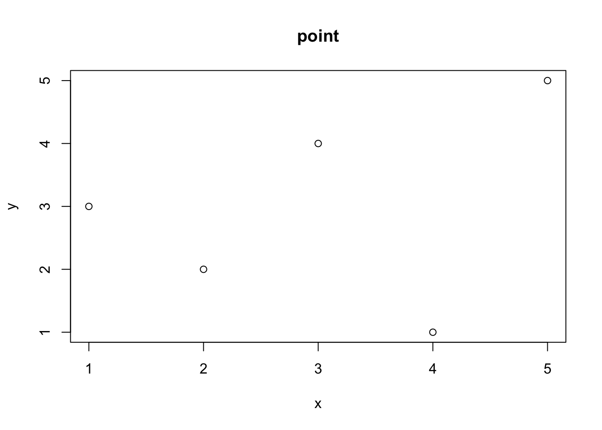
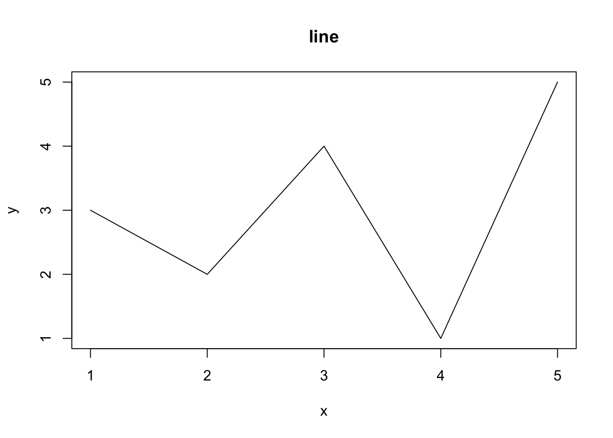
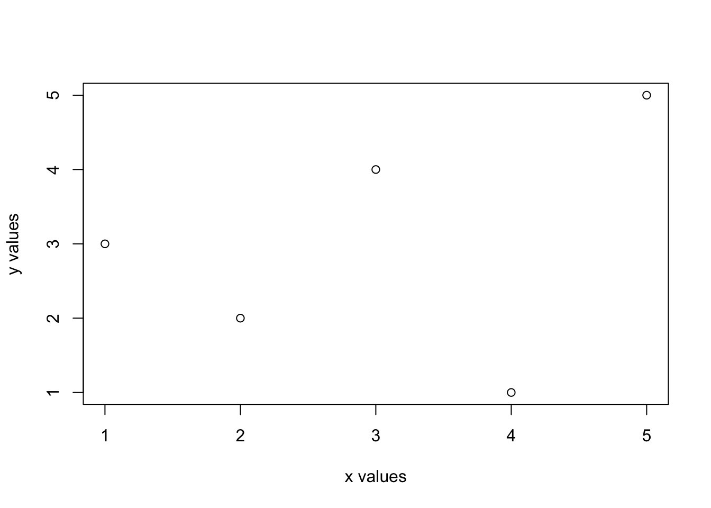
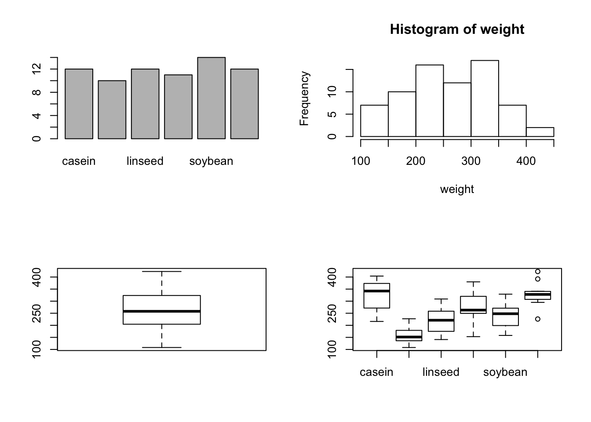
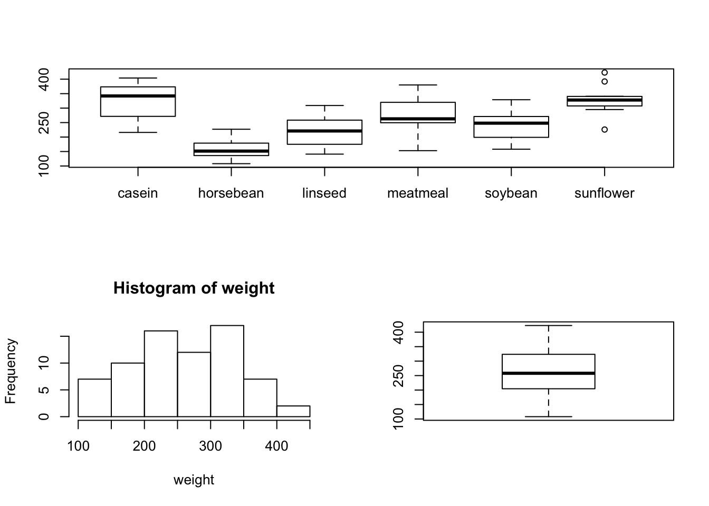

Course Material [2]
5. Plot and Graphics
plot()points()lines()test()mtest()abline()
x<- seq(0, 2*pi, .2)
plot(x, sin(x), type = "p")
plot(x, sin(x), type = "l")
plot(x, sin(x), type = "o")
Add points, lines, legend
plot(x, sin(x), type = "o")
points(x, cos(x), pch = 19, col = 2)
lines(x, cos(x), lty = 2, col = 2)
legend(4, 1, legend = c("sin", "cos"), pch = c(1, 19), lty = c(1, 2), col = c(1, 2))
pch: point style
plot(sapply(1:5, function(x) rep(x, 5)), rep(5:1, 5),
pch = 1:25, xlab = "", ylab = "", main = "", xlim = c(0.7, 5.2), axes = F)
text(sapply(1:5, function(x) rep(x, 5)) -.2, rep(5:1, 5), 1:25)lty: line style
plot(NULL, xlim = c(0,4), ylim = c(1,6), xlab = "", ylab = "", axes = F)
for(i in 1:6){
lines(c(1, 4), c(i, i), lty = i)
text(0.5, i, paste("lty = ", i))
}color: color
plot(sapply(1:5, function(x) rep(x, 5)), rep(5:1, 5),
pch = 16, col = 1:25, xlab = "", ylab = "", main = "", xlim = c(0.7, 5.2), axes = F)
text(sapply(1:5, function(x) rep(x, 5)) -.2, rep(5:1, 5), 1:25)Histogram
attach(iris)
hist(Sepal.Length)Barplot
attach(chickwts)
barplot(table(feed))Boxplot
boxplot(weight)Group-wise
boxplot(weight~feed)Multiple plots
par(mfrow = c(2,2))
barplot(table(feed))
hist(weight)
boxplot(weight)
boxplot(weight~feed)layout(matrix(c(1,1,2,3), 2, 2, byrow = TRUE))
boxplot(weight~feed)
hist(weight)
barplot(table(feed))
Scatter plot
str(trees)
#> 'data.frame': 31 obs. of 3 variables:
#> $ Girth : num 8.3 8.6 8.8 10.5 10.7 10.8 11 11 11.1 11.2 ...
#> $ Height: num 70 65 63 72 81 83 66 75 80 75 ...
#> $ Volume: num 10.3 10.3 10.2 16.4 18.8 19.7 15.6 18.2 22.6 19.9 ...
pairs(trees)
Plot into a file
png(file = "exmple.png", bg = "transparent")
plot(x, sin(x), type = "o")
dev.off()Exercise 5
[To be announced]
6. Statistical Computation
Distributions
dxxx: densityqxxx: quantilepxxx: cumulativerxxx: randome samples
Take normal distribution for an example
dnorm(0, 0, 1)
#> [1] 0.3989423
qnorm(.975, 0, 1)
#> [1] 1.959964
pnorm(1.96, 0, 1)
#> [1] 0.9750021
rnorm(10, 0, 1)
#> [1] 1.6630597 -2.3153083 1.2476464 -0.2551198 -0.7113675 -0.9535577
#> [7] -1.5200734 -1.0972869 -0.5938166 -0.7295790Student t-test
attach(iris)
#> The following objects are masked from iris (pos = 4):
#>
#> Petal.Length, Petal.Width, Sepal.Length, Sepal.Width, Species
levels(Species)
#> [1] "setosa" "versicolor" "virginica"
t.test(Sepal.Length[Species == "setosa"], Sepal.Length[Species == "versicolor"])
#>
#> Welch Two Sample t-test
#>
#> data: Sepal.Length[Species == "setosa"] and Sepal.Length[Species == "versicolor"]
#> t = -10.521, df = 86.538, p-value < 2.2e-16
#> alternative hypothesis: true difference in means is not equal to 0
#> 95 percent confidence interval:
#> -1.1057074 -0.7542926
#> sample estimates:
#> mean of x mean of y
#> 5.006 5.936Analysis of Variance (ANOVA)
aov_res<- aov(Sepal.Length ~ Species)
summary(aov_res)
#> Df Sum Sq Mean Sq F value Pr(>F)
#> Species 2 63.21 31.606 119.3 <2e-16 ***
#> Residuals 147 38.96 0.265
#> ---
#> Signif. codes: 0 '***' 0.001 '**' 0.01 '*' 0.05 '.' 0.1 ' ' 1Linear Regression
attach(airquality)
lm_res<- lm(Ozone ~ Solar.R + Wind + Temp)
summary(lm_res)
#>
#> Call:
#> lm(formula = Ozone ~ Solar.R + Wind + Temp)
#>
#> Residuals:
#> Min 1Q Median 3Q Max
#> -40.485 -14.219 -3.551 10.097 95.619
#>
#> Coefficients:
#> Estimate Std. Error t value Pr(>|t|)
#> (Intercept) -64.34208 23.05472 -2.791 0.00623 **
#> Solar.R 0.05982 0.02319 2.580 0.01124 *
#> Wind -3.33359 0.65441 -5.094 1.52e-06 ***
#> Temp 1.65209 0.25353 6.516 2.42e-09 ***
#> ---
#> Signif. codes: 0 '***' 0.001 '**' 0.01 '*' 0.05 '.' 0.1 ' ' 1
#>
#> Residual standard error: 21.18 on 107 degrees of freedom
#> (42 observations deleted due to missingness)
#> Multiple R-squared: 0.6059, Adjusted R-squared: 0.5948
#> F-statistic: 54.83 on 3 and 107 DF, p-value: < 2.2e-16Model selction via stepwise approach
lm_step<- step(lm_res)
#> Start: AIC=681.71
#> Ozone ~ Solar.R + Wind + Temp
#>
#> Df Sum of Sq RSS AIC
#> <none> 48003 681.71
#> - Solar.R 1 2986.2 50989 686.41
#> - Wind 1 11641.6 59644 703.82
#> - Temp 1 19049.9 67053 716.81
summary(lm_step)
#>
#> Call:
#> lm(formula = Ozone ~ Solar.R + Wind + Temp)
#>
#> Residuals:
#> Min 1Q Median 3Q Max
#> -40.485 -14.219 -3.551 10.097 95.619
#>
#> Coefficients:
#> Estimate Std. Error t value Pr(>|t|)
#> (Intercept) -64.34208 23.05472 -2.791 0.00623 **
#> Solar.R 0.05982 0.02319 2.580 0.01124 *
#> Wind -3.33359 0.65441 -5.094 1.52e-06 ***
#> Temp 1.65209 0.25353 6.516 2.42e-09 ***
#> ---
#> Signif. codes: 0 '***' 0.001 '**' 0.01 '*' 0.05 '.' 0.1 ' ' 1
#>
#> Residual standard error: 21.18 on 107 degrees of freedom
#> (42 observations deleted due to missingness)
#> Multiple R-squared: 0.6059, Adjusted R-squared: 0.5948
#> F-statistic: 54.83 on 3 and 107 DF, p-value: < 2.2e-16Prediction
input<- data.frame("Solar.R" = c(10, 100), "Wind" = c(20, 5), "Temp" = c(76, 76))
predict(lm_step, input)
#> 1 2
#> -4.856638 50.531085Exercise 6
[To be announced]